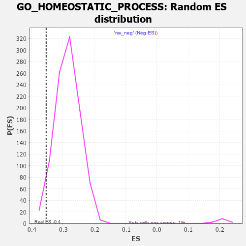

| | | Dataset | 7d |
| Phenotype | NoPhenotypeAvailable |
| Upregulated in class | na_neg |
| GeneSet | GO_HOMEOSTATIC_PROCESS |
| Enrichment Score (ES) | -0.35210744 |
| Normalized Enrichment Score (NES) | -1.2438669 |
| Nominal p-value | 0.025303643 |
| FDR q-value | 0.55385435 |
| FWER p-Value | 1.0 |
Table: GSEA Results Summary
 Fig 1: Enrichment plot: GO_HOMEOSTATIC_PROCESS
Fig 1: Enrichment plot: GO_HOMEOSTATIC_PROCESS
Profile of the Running ES Score & Positions of GeneSet Members on the Rank Ordered List
| PROBE | GENE SYMBOL | GENE_TITLE | RANK IN GENE LIST | RANK METRIC SCORE | RUNNING ES | CORE ENRICHMENT | | 1 | MC4R | | | 57 | 2.491 | 0.0033 | No |
| 2 | RAC2 | | | 60 | 2.442 | 0.0136 | No |
| 3 | PTH2R | | | 65 | 2.249 | 0.0229 | No |
| 4 | UBE2K | | | 94 | 1.739 | 0.0267 | No |
| 5 | IRS1 | | | 98 | 1.659 | 0.0335 | No |
| 6 | DISP3 | | | 110 | 1.525 | 0.0387 | No |
| 7 | ADCY8 | | | 124 | 1.418 | 0.0432 | No |
| 8 | SP3 | | | 131 | 1.391 | 0.0484 | No |
| 9 | CSRP3 | | | 161 | 1.186 | 0.0497 | No |
| 10 | SPI1 | | | 162 | 1.182 | 0.0549 | No |
| 11 | DGAT1 | | | 171 | 1.146 | 0.0588 | No |
| 12 | SMAD5 | | | 231 | 0.979 | 0.0553 | No |
| 13 | THADA | | | 253 | 0.931 | 0.0565 | No |
| 14 | DLL1 | | | 337 | 0.760 | 0.0489 | No |
| 15 | CLN5 | | | 346 | 0.751 | 0.0511 | No |
| 16 | ARNT | | | 357 | 0.741 | 0.0530 | No |
| 17 | HUS1 | | | 362 | 0.735 | 0.0556 | No |
| 18 | BAX | | | 387 | 0.711 | 0.0556 | No |
| 19 | NBN | | | 405 | 0.696 | 0.0563 | No |
| 20 | CCNB2 | | | 429 | 0.672 | 0.0562 | No |
| 21 | RRN3 | | | 438 | 0.667 | 0.0581 | No |
| 22 | ERCC1 | | | 453 | 0.660 | 0.0591 | No |
| 23 | WRN | | | 469 | 0.649 | 0.0599 | No |
| 24 | LRP1 | | | 470 | 0.648 | 0.0627 | No |
| 25 | RFC2 | | | 488 | 0.635 | 0.0633 | No |
| 26 | PKN1 | | | 535 | 0.619 | 0.0599 | No |
| 27 | NR1I3 | | | 539 | 0.615 | 0.0622 | No |
| 28 | SRF | | | 542 | 0.615 | 0.0646 | No |
| 29 | JMJD6 | | | 553 | 0.613 | 0.0659 | No |
| 30 | YLPM1 | | | 556 | 0.611 | 0.0683 | No |
| 31 | NLE1 | | | 565 | 0.609 | 0.0699 | No |
| 32 | APEX1 | | | 577 | 0.604 | 0.0710 | No |
| 33 | PARN | | | 660 | 0.572 | 0.0627 | No |
| 34 | RFC3 | | | 663 | 0.571 | 0.0649 | No |
| 35 | MRE11 | | | 693 | 0.560 | 0.0635 | No |
| 36 | XRCC6 | | | 694 | 0.560 | 0.0660 | No |
| 37 | ID1 | | | 719 | 0.555 | 0.0652 | No |
| 38 | BLM | | | 804 | 0.531 | 0.0564 | No |
| 39 | GAR1 | | | 806 | 0.530 | 0.0586 | No |
| 40 | GLRX3 | | | 813 | 0.529 | 0.0601 | No |
| 41 | RFC4 | | | 815 | 0.528 | 0.0623 | No |
| 42 | RPA1 | | | 817 | 0.527 | 0.0644 | No |
| 43 | LDB2 | | | 831 | 0.523 | 0.0650 | No |
| 44 | NRDC | | | 845 | 0.521 | 0.0655 | No |
| 45 | RPA2 | | | 851 | 0.519 | 0.0671 | No |
| 46 | HDAC8 | | | 881 | 0.510 | 0.0655 | No |
| 47 | PYGL | | | 882 | 0.510 | 0.0677 | No |
| 48 | RMI1 | | | 886 | 0.509 | 0.0695 | No |
| 49 | HMGB2 | | | 892 | 0.507 | 0.0711 | No |
| 50 | NHP2 | | | 906 | 0.505 | 0.0716 | No |
| 51 | WDR48 | | | 975 | 0.489 | 0.0647 | No |
| 52 | UBA5 | | | 982 | 0.488 | 0.0660 | No |
| 53 | DEDD2 | | | 999 | 0.484 | 0.0660 | No |
| 54 | MEN1 | | | 1003 | 0.483 | 0.0677 | No |
| 55 | TELO2 | | | 1006 | 0.482 | 0.0696 | No |
| 56 | AKT1 | | | 1040 | 0.476 | 0.0673 | No |
| 57 | YAP1 | | | 1041 | 0.475 | 0.0693 | No |
| 58 | MEF2C | | | 1054 | 0.473 | 0.0698 | No |
| 59 | FOXK2 | | | 1081 | 0.467 | 0.0684 | No |
| 60 | RAD51 | | | 1090 | 0.466 | 0.0694 | No |
| 61 | G6PC | | | 1121 | 0.459 | 0.0674 | No |
| 62 | SRC | | | 1128 | 0.459 | 0.0686 | No |
| 63 | EMX1 | | | 1143 | 0.455 | 0.0687 | No |
| 64 | VPS54 | | | 1148 | 0.454 | 0.0702 | No |
| 65 | KAT7 | | | 1240 | 0.440 | 0.0601 | No |
| 66 | WDR36 | | | 1260 | 0.437 | 0.0595 | No |
| 67 | CNOT3 | | | 1274 | 0.435 | 0.0596 | No |
| 68 | DKC1 | | | 1292 | 0.431 | 0.0593 | No |
| 69 | DOCK7 | | | 1398 | 0.410 | 0.0472 | No |
| 70 | P2RY1 | | | 1416 | 0.407 | 0.0467 | No |
| 71 | E2F4 | | | 1501 | 0.390 | 0.0373 | No |
| 72 | SCO1 | | | 1536 | 0.385 | 0.0345 | No |
| 73 | SOS1 | | | 1547 | 0.384 | 0.0348 | No |
| 74 | CUTC | | | 1593 | 0.375 | 0.0305 | No |
| 75 | DDB1 | | | 1642 | 0.366 | 0.0258 | No |
| 76 | ACOX3 | | | 1670 | 0.361 | 0.0238 | No |
| 77 | ERCC2 | | | 1712 | 0.354 | 0.0199 | No |
| 78 | KMT2E | | | 1730 | 0.350 | 0.0192 | No |
| 79 | JPH1 | | | 1741 | 0.347 | 0.0194 | No |
| 80 | SLMAP | | | 1744 | 0.346 | 0.0206 | No |
| 81 | PTBP3 | | | 1763 | 0.344 | 0.0197 | No |
| 82 | LRP5 | | | 1769 | 0.342 | 0.0206 | No |
| 83 | STRAP | | | 1793 | 0.339 | 0.0190 | No |
| 84 | COX19 | | | 1807 | 0.336 | 0.0187 | No |
| 85 | GATA4 | | | 1837 | 0.330 | 0.0164 | No |
| 86 | FOXK1 | | | 1859 | 0.326 | 0.0150 | No |
| 87 | SMAD4 | | | 1860 | 0.326 | 0.0164 | No |
| 88 | TLE3 | | | 1863 | 0.325 | 0.0176 | No |
| 89 | NEO1 | | | 1879 | 0.323 | 0.0170 | No |
| 90 | NCOA5 | | | 1884 | 0.322 | 0.0179 | No |
| 91 | HACD3 | | | 1932 | 0.315 | 0.0130 | No |
| 92 | MCUR1 | | | 1953 | 0.313 | 0.0117 | No |
| 93 | MICU1 | | | 1954 | 0.313 | 0.0131 | No |
| 94 | CCR4 | | | 1959 | 0.312 | 0.0139 | No |
| 95 | BRSK2 | | | 1979 | 0.308 | 0.0127 | No |
| 96 | EXO1 | | | 2002 | 0.304 | 0.0112 | No |
| 97 | FOXO4 | | | 2004 | 0.304 | 0.0124 | No |
| 98 | RAF1 | | | 2011 | 0.303 | 0.0129 | No |
| 99 | IRF4 | | | 2054 | 0.298 | 0.0086 | No |
| 100 | KDM3A | | | 2078 | 0.294 | 0.0069 | No |
| 101 | SART3 | | | 2084 | 0.293 | 0.0075 | No |
| 102 | SYK | | | 2186 | 0.278 | -0.0046 | No |
| 103 | MYLIP | | | 2225 | 0.272 | -0.0085 | No |
| 104 | XRCC1 | | | 2287 | 0.262 | -0.0154 | No |
| 105 | KSR2 | | | 2292 | 0.261 | -0.0148 | No |
| 106 | ANO6 | | | 2339 | 0.255 | -0.0197 | No |
| 107 | MIF | | | 2357 | 0.252 | -0.0209 | No |
| 108 | SIN3A | | | 2361 | 0.251 | -0.0202 | No |
| 109 | HIPK2 | | | 2389 | 0.247 | -0.0227 | No |
| 110 | BTBD9 | | | 2407 | 0.245 | -0.0239 | No |
| 111 | OMA1 | | | 2408 | 0.244 | -0.0228 | No |
| 112 | MET | | | 2430 | 0.240 | -0.0245 | No |
| 113 | FEN1 | | | 2446 | 0.237 | -0.0255 | No |
| 114 | KDM1A | | | 2447 | 0.237 | -0.0245 | No |
| 115 | PGAM5 | | | 2457 | 0.235 | -0.0246 | No |
| 116 | ZC3H8 | | | 2486 | 0.229 | -0.0273 | No |
| 117 | BAG3 | | | 2620 | 0.209 | -0.0440 | No |
| 118 | ROGDI | | | 2633 | 0.207 | -0.0447 | No |
| 119 | ARID2 | | | 2664 | 0.204 | -0.0477 | No |
| 120 | RORA | | | 2730 | 0.193 | -0.0555 | No |
| 121 | CUL1 | | | 2735 | 0.193 | -0.0552 | No |
| 122 | XRN1 | | | 2786 | 0.185 | -0.0610 | No |
| 123 | AQP3 | | | 2796 | 0.184 | -0.0614 | No |
| 124 | ATR | | | 2800 | 0.183 | -0.0610 | No |
| 125 | PCK2 | | | 2823 | 0.180 | -0.0631 | No |
| 126 | CAND1 | | | 2845 | 0.177 | -0.0651 | No |
| 127 | CLN6 | | | 2847 | 0.177 | -0.0644 | No |
| 128 | WDTC1 | | | 2865 | 0.172 | -0.0659 | No |
| 129 | MTM1 | | | 2893 | 0.168 | -0.0688 | No |
| 130 | ERO1A | | | 2925 | 0.162 | -0.0722 | No |
| 131 | UBE2S | | | 2980 | 0.153 | -0.0786 | No |
| 132 | ANO1 | | | 2982 | 0.152 | -0.0781 | No |
| 133 | ISCU | | | 2989 | 0.151 | -0.0782 | No |
| 134 | TXNL1 | | | 3004 | 0.149 | -0.0794 | No |
| 135 | RTEL1 | | | 3010 | 0.148 | -0.0795 | No |
| 136 | BSCL2 | | | 3021 | 0.146 | -0.0801 | No |
| 137 | BRCA2 | | | 3024 | 0.146 | -0.0798 | No |
| 138 | UFL1 | | | 3041 | 0.144 | -0.0813 | No |
| 139 | MAEA | | | 3048 | 0.143 | -0.0814 | No |
| 140 | CHP1 | | | 3089 | 0.138 | -0.0861 | No |
| 141 | GPX1 | | | 3109 | 0.135 | -0.0880 | No |
| 142 | GCNT2 | | | 3162 | 0.128 | -0.0943 | No |
| 143 | PAX6 | | | 3170 | 0.127 | -0.0947 | No |
| 144 | PRDX4 | | | 3214 | 0.120 | -0.0999 | No |
| 145 | COX11 | | | 3256 | 0.113 | -0.1048 | No |
| 146 | SMG5 | | | 3285 | 0.108 | -0.1080 | No |
| 147 | SMAD3 | | | 3303 | 0.105 | -0.1098 | No |
| 148 | SMAD1 | | | 3337 | 0.099 | -0.1137 | No |
| 149 | SMAD7 | | | 3369 | 0.093 | -0.1174 | No |
| 150 | DDX3X | | | 3388 | 0.091 | -0.1194 | No |
| 151 | RFC5 | | | 3389 | 0.091 | -0.1190 | No |
| 152 | MED1 | | | 3405 | 0.089 | -0.1206 | No |
| 153 | KCTD7 | | | 3417 | 0.088 | -0.1217 | No |
| 154 | RFC1 | | | 3437 | 0.085 | -0.1238 | No |
| 155 | CDK5 | | | 3480 | 0.080 | -0.1290 | No |
| 156 | PDIA6 | | | 3512 | 0.075 | -0.1328 | No |
| 157 | HDAC3 | | | 3528 | 0.072 | -0.1344 | No |
| 158 | ABCB7 | | | 3530 | 0.071 | -0.1343 | No |
| 159 | PRDX5 | | | 3547 | 0.068 | -0.1361 | No |
| 160 | NOP10 | | | 3573 | 0.064 | -0.1391 | No |
| 161 | GPR18 | | | 3578 | 0.063 | -0.1393 | No |
| 162 | CHERP | | | 3587 | 0.062 | -0.1401 | No |
| 163 | TNS2 | | | 3588 | 0.062 | -0.1399 | No |
| 164 | MAPK3 | | | 3589 | 0.062 | -0.1396 | No |
| 165 | RIC3 | | | 3629 | 0.055 | -0.1445 | No |
| 166 | FIS1 | | | 3654 | 0.051 | -0.1474 | No |
| 167 | SKP1 | | | 3663 | 0.049 | -0.1483 | No |
| 168 | ABCD1 | | | 3677 | 0.047 | -0.1498 | No |
| 169 | NF1 | | | 3713 | 0.040 | -0.1543 | No |
| 170 | HSF1 | | | 3718 | 0.039 | -0.1546 | No |
| 171 | HTR1B | | | 3745 | 0.035 | -0.1579 | No |
| 172 | SMG1 | | | 3843 | 0.021 | -0.1706 | No |
| 173 | NEK2 | | | 3871 | 0.016 | -0.1741 | No |
| 174 | TMX1 | | | 3942 | 0.004 | -0.1833 | No |
| 175 | IGF1R | | | 3970 | -0.002 | -0.1869 | No |
| 176 | GCNT4 | | | 4003 | -0.009 | -0.1911 | No |
| 177 | PARP1 | | | 4014 | -0.010 | -0.1923 | No |
| 178 | ATG5 | | | 4051 | -0.016 | -0.1970 | No |
| 179 | AMPD2 | | | 4062 | -0.017 | -0.1983 | No |
| 180 | TAL1 | | | 4064 | -0.018 | -0.1983 | No |
| 181 | CSF1 | | | 4074 | -0.019 | -0.1994 | No |
| 182 | PDE4B | | | 4089 | -0.022 | -0.2012 | No |
| 183 | ABL1 | | | 4125 | -0.027 | -0.2057 | No |
| 184 | PLCE1 | | | 4127 | -0.028 | -0.2057 | No |
| 185 | WNK3 | | | 4153 | -0.034 | -0.2088 | No |
| 186 | HNF4A | | | 4157 | -0.034 | -0.2091 | No |
| 187 | PDX1 | | | 4179 | -0.038 | -0.2117 | No |
| 188 | ENY2 | | | 4195 | -0.041 | -0.2135 | No |
| 189 | USF1 | | | 4296 | -0.059 | -0.2264 | No |
| 190 | TSHR | | | 4322 | -0.063 | -0.2295 | No |
| 191 | OPA1 | | | 4330 | -0.065 | -0.2301 | No |
| 192 | ADRB2 | | | 4352 | -0.068 | -0.2326 | No |
| 193 | ACADL | | | 4360 | -0.069 | -0.2332 | No |
| 194 | LAMC1 | | | 4445 | -0.084 | -0.2439 | No |
| 195 | TMCO1 | | | 4451 | -0.085 | -0.2442 | No |
| 196 | ERCC6 | | | 4464 | -0.087 | -0.2454 | No |
| 197 | NEDD8 | | | 4465 | -0.087 | -0.2450 | No |
| 198 | LRRK2 | | | 4467 | -0.087 | -0.2448 | No |
| 199 | JPH3 | | | 4481 | -0.091 | -0.2461 | No |
| 200 | ERP44 | | | 4482 | -0.091 | -0.2457 | No |
| 201 | NPC2 | | | 4498 | -0.093 | -0.2473 | No |
| 202 | PINX1 | | | 4515 | -0.097 | -0.2490 | No |
| 203 | NPTN | | | 4519 | -0.098 | -0.2490 | No |
| 204 | APC | | | 4558 | -0.107 | -0.2535 | No |
| 205 | MICU3 | | | 4571 | -0.110 | -0.2546 | No |
| 206 | PNKP | | | 4572 | -0.111 | -0.2541 | No |
| 207 | MPV17 | | | 4575 | -0.112 | -0.2539 | No |
| 208 | CMA1 | | | 4580 | -0.114 | -0.2539 | No |
| 209 | GATA3 | | | 4614 | -0.120 | -0.2578 | No |
| 210 | LETM1 | | | 4644 | -0.127 | -0.2611 | No |
| 211 | NMUR2 | | | 4646 | -0.127 | -0.2606 | No |
| 212 | ITPR1 | | | 4661 | -0.130 | -0.2619 | No |
| 213 | CLCN3 | | | 4678 | -0.134 | -0.2634 | No |
| 214 | CNNM4 | | | 4738 | -0.147 | -0.2706 | No |
| 215 | PDIA3 | | | 4740 | -0.147 | -0.2701 | No |
| 216 | PLCG1 | | | 4770 | -0.151 | -0.2733 | No |
| 217 | RTN4 | | | 4783 | -0.154 | -0.2742 | No |
| 218 | MYO5A | | | 4787 | -0.155 | -0.2739 | No |
| 219 | TERT | | | 4801 | -0.157 | -0.2749 | No |
| 220 | PLCL2 | | | 4807 | -0.159 | -0.2749 | No |
| 221 | P2RX4 | | | 4813 | -0.161 | -0.2749 | No |
| 222 | FBXW7 | | | 4816 | -0.161 | -0.2744 | No |
| 223 | GATM | | | 4858 | -0.168 | -0.2791 | No |
| 224 | ATRX | | | 4929 | -0.184 | -0.2875 | No |
| 225 | XRCC5 | | | 4946 | -0.187 | -0.2888 | No |
| 226 | ADCK1 | | | 4953 | -0.188 | -0.2888 | No |
| 227 | PRKDC | | | 4955 | -0.189 | -0.2881 | No |
| 228 | TRA2B | | | 4962 | -0.191 | -0.2881 | No |
| 229 | ACKR4 | | | 4981 | -0.194 | -0.2896 | No |
| 230 | PROM1 | | | 4996 | -0.197 | -0.2906 | No |
| 231 | DMXL1 | | | 5004 | -0.198 | -0.2907 | No |
| 232 | PDPK1 | | | 5043 | -0.207 | -0.2948 | No |
| 233 | DRD2 | | | 5088 | -0.221 | -0.2996 | No |
| 234 | ABHD4 | | | 5100 | -0.224 | -0.3001 | No |
| 235 | NOVA2 | | | 5118 | -0.231 | -0.3014 | No |
| 236 | FLCN | | | 5140 | -0.235 | -0.3031 | No |
| 237 | SMO | | | 5195 | -0.247 | -0.3092 | No |
| 238 | NOVA1 | | | 5197 | -0.247 | -0.3082 | No |
| 239 | ATM | | | 5210 | -0.249 | -0.3087 | No |
| 240 | GPR4 | | | 5219 | -0.250 | -0.3087 | No |
| 241 | USF2 | | | 5232 | -0.252 | -0.3092 | No |
| 242 | TNKS2 | | | 5239 | -0.254 | -0.3089 | No |
| 243 | KRIT1 | | | 5248 | -0.257 | -0.3088 | No |
| 244 | IDE | | | 5252 | -0.258 | -0.3081 | No |
| 245 | RAB7A | | | 5302 | -0.271 | -0.3134 | No |
| 246 | RAD50 | | | 5314 | -0.276 | -0.3136 | No |
| 247 | NPY2R | | | 5331 | -0.281 | -0.3145 | No |
| 248 | ITPR3 | | | 5361 | -0.288 | -0.3171 | No |
| 249 | CSMD1 | | | 5377 | -0.290 | -0.3178 | No |
| 250 | GRIN1 | | | 5381 | -0.291 | -0.3170 | No |
| 251 | DLG4 | | | 5388 | -0.293 | -0.3165 | No |
| 252 | PRDX3 | | | 5389 | -0.293 | -0.3152 | No |
| 253 | ACOX2 | | | 5461 | -0.310 | -0.3232 | No |
| 254 | ACTN3 | | | 5486 | -0.315 | -0.3250 | No |
| 255 | FABP4 | | | 5509 | -0.322 | -0.3265 | No |
| 256 | VDR | | | 5517 | -0.325 | -0.3261 | No |
| 257 | SIDT2 | | | 5542 | -0.331 | -0.3278 | No |
| 258 | ABCG2 | | | 5556 | -0.335 | -0.3281 | No |
| 259 | EHD1 | | | 5560 | -0.336 | -0.3270 | No |
| 260 | CPT2 | | | 5611 | -0.348 | -0.3321 | No |
| 261 | GNL3 | | | 5614 | -0.349 | -0.3308 | No |
| 262 | G6PD | | | 5638 | -0.358 | -0.3323 | No |
| 263 | WNK1 | | | 5650 | -0.362 | -0.3322 | No |
| 264 | SOAT1 | | | 5657 | -0.363 | -0.3314 | No |
| 265 | CALCR | | | 5730 | -0.386 | -0.3392 | No |
| 266 | CIB2 | | | 5774 | -0.398 | -0.3432 | No |
| 267 | ABCG1 | | | 5778 | -0.399 | -0.3418 | No |
| 268 | TRPC6 | | | 5784 | -0.401 | -0.3408 | No |
| 269 | ADA | | | 5798 | -0.405 | -0.3407 | No |
| 270 | PDIA4 | | | 5803 | -0.406 | -0.3395 | No |
| 271 | BBS4 | | | 5806 | -0.407 | -0.3380 | No |
| 272 | ANXA7 | | | 5827 | -0.413 | -0.3388 | No |
| 273 | CDK16 | | | 5869 | -0.425 | -0.3424 | No |
| 274 | STK11 | | | 5922 | -0.443 | -0.3473 | No |
| 275 | LDB1 | | | 5944 | -0.451 | -0.3481 | No |
| 276 | DCTN1 | | | 5950 | -0.454 | -0.3468 | No |
| 277 | CXCR5 | | | 5954 | -0.456 | -0.3452 | No |
| 278 | PTPRN | | | 6007 | -0.474 | -0.3500 | Yes |
| 279 | XBP1 | | | 6011 | -0.475 | -0.3484 | Yes |
| 280 | HVCN1 | | | 6034 | -0.482 | -0.3492 | Yes |
| 281 | TRPC3 | | | 6035 | -0.483 | -0.3471 | Yes |
| 282 | RAC1 | | | 6036 | -0.484 | -0.3450 | Yes |
| 283 | PPT1 | | | 6038 | -0.485 | -0.3430 | Yes |
| 284 | SFXN1 | | | 6073 | -0.497 | -0.3453 | Yes |
| 285 | CALR | | | 6077 | -0.499 | -0.3436 | Yes |
| 286 | UBB | | | 6090 | -0.503 | -0.3430 | Yes |
| 287 | ABCB6 | | | 6106 | -0.507 | -0.3428 | Yes |
| 288 | TNKS | | | 6138 | -0.516 | -0.3446 | Yes |
| 289 | EGR1 | | | 6165 | -0.527 | -0.3457 | Yes |
| 290 | STIM1 | | | 6169 | -0.528 | -0.3439 | Yes |
| 291 | RAG1 | | | 6176 | -0.530 | -0.3423 | Yes |
| 292 | KLF2 | | | 6182 | -0.532 | -0.3407 | Yes |
| 293 | ATP7B | | | 6194 | -0.535 | -0.3398 | Yes |
| 294 | INSR | | | 6204 | -0.538 | -0.3387 | Yes |
| 295 | LCA5 | | | 6213 | -0.540 | -0.3374 | Yes |
| 296 | RGN | | | 6233 | -0.547 | -0.3375 | Yes |
| 297 | XPR1 | | | 6250 | -0.555 | -0.3372 | Yes |
| 298 | AP3D1 | | | 6261 | -0.558 | -0.3361 | Yes |
| 299 | STK39 | | | 6274 | -0.563 | -0.3352 | Yes |
| 300 | GALR2 | | | 6355 | -0.599 | -0.3432 | Yes |
| 301 | TLCD2 | | | 6361 | -0.601 | -0.3413 | Yes |
| 302 | NPC1 | | | 6364 | -0.602 | -0.3389 | Yes |
| 303 | BBS2 | | | 6383 | -0.608 | -0.3386 | Yes |
| 304 | ISG15 | | | 6385 | -0.608 | -0.3361 | Yes |
| 305 | TRPM4 | | | 6390 | -0.612 | -0.3340 | Yes |
| 306 | PRDX6 | | | 6396 | -0.615 | -0.3320 | Yes |
| 307 | BBS1 | | | 6397 | -0.616 | -0.3293 | Yes |
| 308 | CSK | | | 6428 | -0.630 | -0.3305 | Yes |
| 309 | ABCA2 | | | 6433 | -0.634 | -0.3283 | Yes |
| 310 | LIPG | | | 6468 | -0.648 | -0.3300 | Yes |
| 311 | TRPV4 | | | 6515 | -0.668 | -0.3331 | Yes |
| 312 | FGGY | | | 6517 | -0.669 | -0.3304 | Yes |
| 313 | P2RX5 | | | 6576 | -0.699 | -0.3350 | Yes |
| 314 | CLN3 | | | 6580 | -0.699 | -0.3324 | Yes |
| 315 | TLCD1 | | | 6581 | -0.700 | -0.3293 | Yes |
| 316 | ARF1 | | | 6583 | -0.701 | -0.3264 | Yes |
| 317 | ALMS1 | | | 6590 | -0.704 | -0.3241 | Yes |
| 318 | PIF1 | | | 6604 | -0.713 | -0.3228 | Yes |
| 319 | MKS1 | | | 6607 | -0.715 | -0.3199 | Yes |
| 320 | TUB | | | 6611 | -0.718 | -0.3172 | Yes |
| 321 | CUBN | | | 6624 | -0.727 | -0.3156 | Yes |
| 322 | WWTR1 | | | 6631 | -0.729 | -0.3132 | Yes |
| 323 | PDIA5 | | | 6639 | -0.734 | -0.3110 | Yes |
| 324 | USH1G | | | 6654 | -0.740 | -0.3096 | Yes |
| 325 | MPC2 | | | 6683 | -0.753 | -0.3100 | Yes |
| 326 | EGFR | | | 6708 | -0.765 | -0.3099 | Yes |
| 327 | UNC80 | | | 6724 | -0.770 | -0.3085 | Yes |
| 328 | ABHD8 | | | 6735 | -0.778 | -0.3065 | Yes |
| 329 | PDIA2 | | | 6762 | -0.792 | -0.3065 | Yes |
| 330 | TRPM8 | | | 6781 | -0.800 | -0.3054 | Yes |
| 331 | LYAR | | | 6828 | -0.830 | -0.3078 | Yes |
| 332 | PTH1R | | | 6845 | -0.839 | -0.3063 | Yes |
| 333 | ABCA4 | | | 6872 | -0.851 | -0.3060 | Yes |
| 334 | IQCB1 | | | 6882 | -0.856 | -0.3035 | Yes |
| 335 | HEXB | | | 6894 | -0.864 | -0.3012 | Yes |
| 336 | PIM3 | | | 6964 | -0.914 | -0.3063 | Yes |
| 337 | NPHP4 | | | 6991 | -0.931 | -0.3057 | Yes |
| 338 | CCR2 | | | 7003 | -0.939 | -0.3031 | Yes |
| 339 | FBXL5 | | | 7046 | -0.965 | -0.3044 | Yes |
| 340 | GRM5 | | | 7053 | -0.969 | -0.3010 | Yes |
| 341 | WHRN | | | 7139 | -1.025 | -0.3078 | Yes |
| 342 | CFTR | | | 7143 | -1.030 | -0.3037 | Yes |
| 343 | TMX3 | | | 7158 | -1.040 | -0.3010 | Yes |
| 344 | TSPO | | | 7194 | -1.065 | -0.3010 | Yes |
| 345 | MFN2 | | | 7208 | -1.081 | -0.2981 | Yes |
| 346 | CNGB1 | | | 7222 | -1.096 | -0.2950 | Yes |
| 347 | ABCA1 | | | 7243 | -1.113 | -0.2928 | Yes |
| 348 | HCN4 | | | 7260 | -1.134 | -0.2900 | Yes |
| 349 | TEP1 | | | 7284 | -1.155 | -0.2880 | Yes |
| 350 | PARP3 | | | 7289 | -1.158 | -0.2835 | Yes |
| 351 | ANK2 | | | 7298 | -1.170 | -0.2795 | Yes |
| 352 | GRN | | | 7319 | -1.194 | -0.2769 | Yes |
| 353 | TRPM1 | | | 7324 | -1.197 | -0.2723 | Yes |
| 354 | CYLD | | | 7333 | -1.206 | -0.2681 | Yes |
| 355 | GPD1L | | | 7343 | -1.215 | -0.2640 | Yes |
| 356 | PLAC8 | | | 7355 | -1.223 | -0.2601 | Yes |
| 357 | WDR35 | | | 7357 | -1.225 | -0.2550 | Yes |
| 358 | GRM1 | | | 7404 | -1.272 | -0.2555 | Yes |
| 359 | NEK7 | | | 7415 | -1.285 | -0.2512 | Yes |
| 360 | OTC | | | 7430 | -1.305 | -0.2474 | Yes |
| 361 | KCNB1 | | | 7444 | -1.327 | -0.2434 | Yes |
| 362 | VAPB | | | 7482 | -1.378 | -0.2423 | Yes |
| 363 | LAMA2 | | | 7549 | -1.468 | -0.2446 | Yes |
| 364 | GRIK2 | | | 7552 | -1.471 | -0.2385 | Yes |
| 365 | CALM1 | | | 7567 | -1.499 | -0.2338 | Yes |
| 366 | TRPV6 | | | 7569 | -1.502 | -0.2274 | Yes |
| 367 | TTPA | | | 7575 | -1.516 | -0.2215 | Yes |
| 368 | GRM2 | | | 7596 | -1.547 | -0.2174 | Yes |
| 369 | TRPA1 | | | 7625 | -1.608 | -0.2141 | Yes |
| 370 | PKD1 | | | 7628 | -1.611 | -0.2074 | Yes |
| 371 | CROCC | | | 7639 | -1.628 | -0.2016 | Yes |
| 372 | MCU | | | 7644 | -1.637 | -0.1951 | Yes |
| 373 | TRPM2 | | | 7680 | -1.712 | -0.1922 | Yes |
| 374 | ANK3 | | | 7690 | -1.740 | -0.1859 | Yes |
| 375 | MDM1 | | | 7691 | -1.742 | -0.1783 | Yes |
| 376 | ADCY1 | | | 7695 | -1.752 | -0.1711 | Yes |
| 377 | RHAG | | | 7701 | -1.769 | -0.1641 | Yes |
| 378 | ADCY9 | | | 7704 | -1.783 | -0.1566 | Yes |
| 379 | BOK | | | 7715 | -1.817 | -0.1500 | Yes |
| 380 | DCP2 | | | 7724 | -1.833 | -0.1431 | Yes |
| 381 | CASP3 | | | 7747 | -1.902 | -0.1378 | Yes |
| 382 | P2RY8 | | | 7750 | -1.912 | -0.1297 | Yes |
| 383 | TRPM7 | | | 7761 | -1.936 | -0.1226 | Yes |
| 384 | PDE4D | | | 7764 | -1.944 | -0.1145 | Yes |
| 385 | GRIK5 | | | 7792 | -2.044 | -0.1091 | Yes |
| 386 | MUC2 | | | 7802 | -2.066 | -0.1014 | Yes |
| 387 | TRAF6 | | | 7818 | -2.157 | -0.0940 | Yes |
| 388 | PKD2 | | | 7822 | -2.167 | -0.0849 | Yes |
| 389 | GRIA1 | | | 7836 | -2.260 | -0.0768 | Yes |
| 390 | CALM3 | | | 7869 | -2.525 | -0.0701 | Yes |
| 391 | FYN | | | 7881 | -2.622 | -0.0602 | Yes |
| 392 | CAV3 | | | 7896 | -2.739 | -0.0501 | Yes |
| 393 | NPSR1 | | | 7913 | -2.947 | -0.0394 | Yes |
| 394 | ARRB1 | | | 7935 | -3.377 | -0.0275 | Yes |
| 395 | PASK | | | 7946 | -3.674 | -0.0129 | Yes |
| 396 | XIAP | | | 7947 | -3.696 | 0.0032 | Yes |
Table: GSEA details [plain text format]

Fig 2: GO_HOMEOSTATIC_PROCESS: Random ES distribution
Gene set null distribution of ES for GO_HOMEOSTATIC_PROCESS